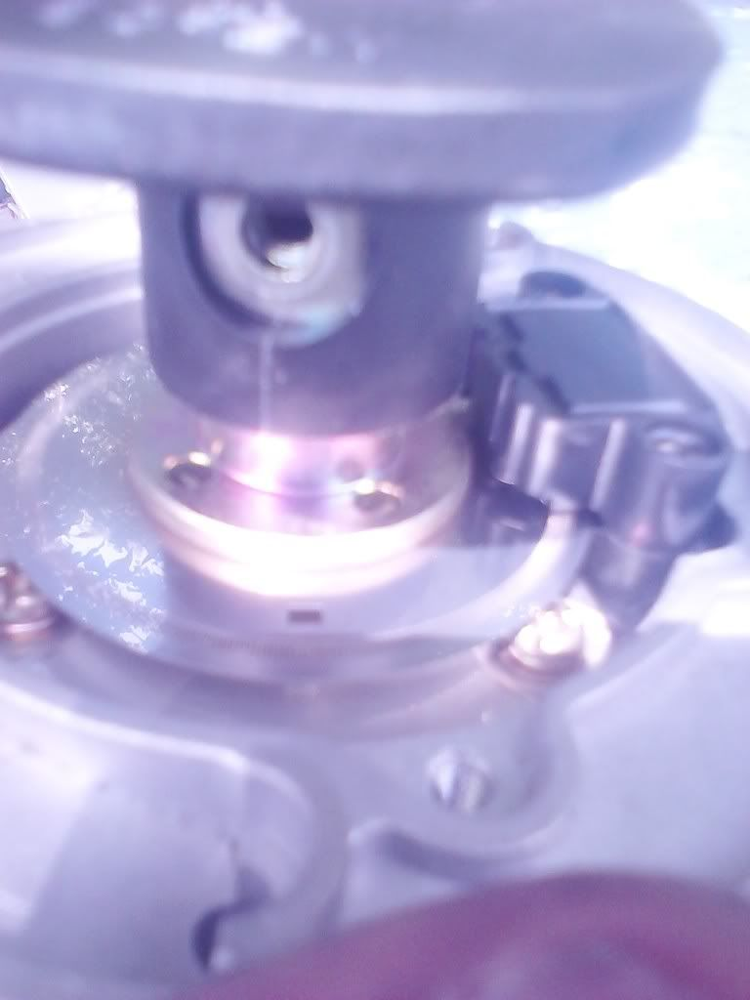

-
Now would be a great time for RSB-07 upgrade
-
You may have lost me there. J30 maxima cas/dizzy? Please do elaborate. I'll try and find one tomorrow. My motor came out of a clean 3rd gen maxi. No dizzy. They seem to be the first thing gone when those cars show up to my local place.... Pathfinder dizzy gets left alone. Maybe your suggestion reasons have something to do with that?
Does the optical disk differ from that of the pathfinder?vg30'd s13 in progress. Shocks. Pegs. Lucky. -
It's definitely different (cas disk square slot to rotor contact location) got a 3rd gen maxi dizzy and cap off a clean enough car today and this is what i saw when i pulled the cover.

No spark. I"m going to check back through the ignition hardware manual for the single onboard driver. Maybe i missed something. if you look at the back of the coil at the top of the "T" The right side would be the coil + correct? I flipped them around after no spark and ended up burning a 15a fuse on the coil relay trying it again so probably had it right the first time. Anyone running ms1 v2.2 with the onboard driver please hit me up. Maybe i have the legs wrong or something isn't jumpered right.vg30'd s13 in progress. Shocks. Pegs. Lucky. -
Ok well ignition output wiring theoretically and visually is fine. CHecked over and over the schematic as well as my own connections several times. Optical distributor has D5 in place for nissan diagram on the megamanual. This one does not. One is related to tach imput (which i'm getting) just no spark output....... ffffff. Anyway, trying it like this. D8 is ALREADY jumpered. D5 is not so i'm going to tell it to gtfo with a piece of snipped lead as soon as i brush my teeth and get out the office maybe tach input is working clear enough to give me a signal on tuner studio but wont tell my coil to fire. Idk. it's a mystery. All these megasquirted diy cars are mysteries when they first get going........
Big thanks to Russ for at least trying to help me get this party started. It'll happen, just not sure when. My car doesn't like me and i'm used to that so just keeping my cool. =D
If someone would to be so kind to send me their ms1 v2.2 codebase setup screen shot that works with stock dizzy (trigger disk type/make/model required or it's irrelevant) i'd be thrilled. Maybe that's why i'm not hitting spark also. Could be about 3 or 4 small things that could turn into big things if not set correctly so who cares where the square slot is if ms is getting tach signal from BOTH distributors i have in my hands right here right now.vg30'd s13 in progress. Shocks. Pegs. Lucky. -
Actually megasquirt cares where the square slot is. This crap may have something to do with why it's not doing it's job maybe?
This is mine off t/s. For anyone viewing DO NOT USE ANY SETTINGS POSTED:
vg30'd s13 in progress. Shocks. Pegs. Lucky. -
Repeat, disregard the above post. Dont touch that ish. If you have a STOCK wheel your distributor should have "MSNS" selected, wheel decoder off. That isn't why i wasn't getting spark. ON my ms1 v2.2 board D8 and D5 BOTH had to be jumpered. The nissan dizzy diagram i had only had D8 jumpered. No mention of doing anything with d5. D5 jumped gave me spark. Longest idle yesterday was 10 seconds. THen come to find out i had my injectors set up incorrectly after finding a chart on hybridz. Everything was set wrong for my injectors as well as the injectors for the base map i was using and playing with which makes me wonder how the creator got an idle or decent tune out of it at all to even suggest that msq to me.....which i'm not posting because it's way off. Timing/ve/target afr is all good tho.
http://forums.hybridz.org/topic/5591…-spread-sheet/vg30'd s13 in progress. Shocks. Pegs. Lucky. -
Starting to think my dizzy is off now because i swear she wants to start. I noticed no change switching between the j30 and D21 distributors. Any way to re-clock the disks in these? I'm real close to just saying screw it and buying the decoder wheel because these whole dizzy disk/rotor point crap is probably whats doing me in right now. Lol. Going to put my pathfinder dizzy back in and see if anything changes....
Apparently the location of the SQUARE slot, ROTOR and PICKUP SENSOR make all the difference? I dunno. It's like stuff was put out there about the dizzy's and nobody ever cared to dig deeper into it until i got my hands dirty. Rest assured i love getting my hands dirty! I'll be back. Hopefully with good news..... Meh.
Alrighty. Pathfinder dizzy is stabbed in as of 20 minutes ago pointing to rotor 1. Required fuel is for 460cc injectors alternating even fire 6x6 inj to cylinder. I just used the calculator in ts. something like 7.2 or 7.3 m/s. I used the values from the chart in my last post to calibrate the injectors.
Maybe i need an external fpr? If i cut the fuel pump off it will burn what's left in the line and wants to idle til that fuel is gone. I cut the pump on and it stalls it out...... I keep dialing my ve table back. It's not timing. Def fuel now..... I have a rather stout pump. wally 340 or something. Def bigger than a 255. Came with the car. Stock FPR though.
Should i shorten my pulsewidths? Need help. Badly.vg30'd s13 in progress. Shocks. Pegs. Lucky. -
doodface… dew yoursmellf a flavour and get a used, known-working, Z31 dizzifyer.
I bought a 16E01 Maxima unit, and it caused me grief for two fuckn years, chasing electrical problems.
I put the dirty old 88T unit from my donor vehicle on the car and it finally ran like it did when I bought the car back in like 200whatever. -
It wants to run when i cut the fuel pump off. I starve all the remaining gas out of it with the pump off and i get a good 5-6 seconds of idle.
I'd actually like to see the disk inside of an 88 turbo. Specifically the square slot in relation to the rotor.vg30'd s13 in progress. Shocks. Pegs. Lucky. -
that's normal. i prob get close to 10 seconds before it goes kaput completely. -
Meh. This sucks. I need to get this thing running soon. I keep missing events. I need to drive/kill tires. =(vg30'd s13 in progress. Shocks. Pegs. Lucky. -
Get a carb.BLOZ UP.com
It is not recommended to confirm proper installation by driving into walls or other barriers as this could cause personal injury or damage to the vehicle. -
Lol. FPR failed. I DO see what you did there. Nice try. vg30'd s13 in progress. Shocks. Pegs. Lucky.
vg30'd s13 in progress. Shocks. Pegs. Lucky. -
Installed a flyback to try and run the car on some 259cc lows and all of them were clogged. Got some high z to match my one that was clogged (car was trying to run on 5 this whole time.....) and was trying to test those. Didn't get a chance to even plug one into the pigtail i had put into the stim terminals. **the stim is a fantastic way to bench test injectors.** Had some failure to c15. LUCKY that is all that failed. All my highs had to be tested on a 9v battery at this point....
It's still kinda mysterious to me given it ran for 2 hours on a low impedance injector setting literally pulsing an injector for me so i could verify it was working. Nothing even got warm. It ran fine. 15 minutes of warmup time (no injector plugged into the stim output) after setting the constants for high z injector was all it took. That's crazy.
You can clearly see the difference in color in the capacitor. It wasn't installed backwards. Some solder made it's way into the shell somehow. Initially i thought it exploded until what i thought was melted lead came off as a bead and bounced on the table. I didn't notice it previously and probably didn't do all that great of an inspection job. That's the only explanation i have. Settings were correct for high z injectors.
1.00 m/s opening time
.20 batt/v correction
100% pwm current limit
25.4 m/s time threshold
Initially i thought it was a voltage issue but i get CLEAN 12v signal in real time view.
Also had an issue with my coil getting very hot and my relay was clicking on and off. The coil itself sounded as though it was poping and clicking loudly also. No change from original wiring. It had never done that before. Not for days being cranked for hours on did it ever exhibit such behavior. This was AFTER installation of the flyback because i had put the 259 lows in the rail and had to test on the car because i was checking rail pressure, spray pattern and pump voltage as well.
I'll see what happens soon enough. It's always been fuel fuel fuel. I get that straight and my ecu is attacking. Lol.vg30'd s13 in progress. Shocks. Pegs. Lucky.

Copyright © 2006–. All rights reserved. Privacy Policy